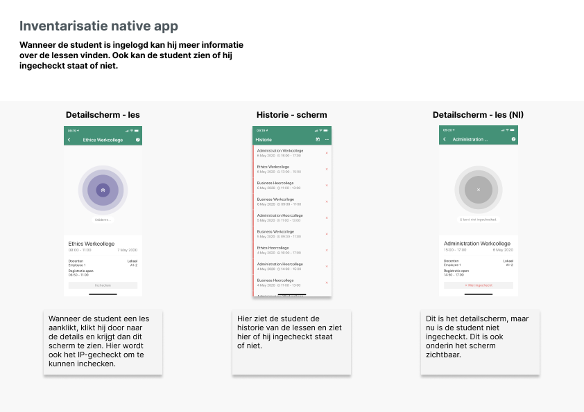
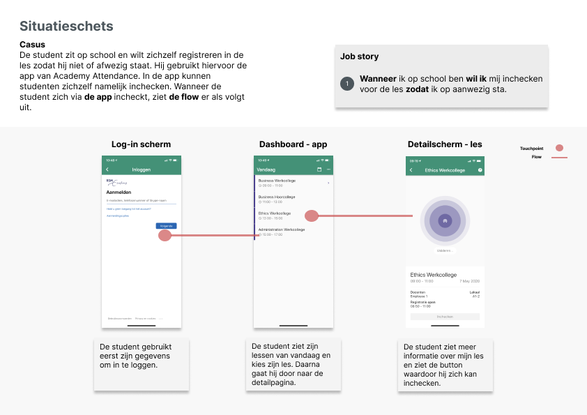
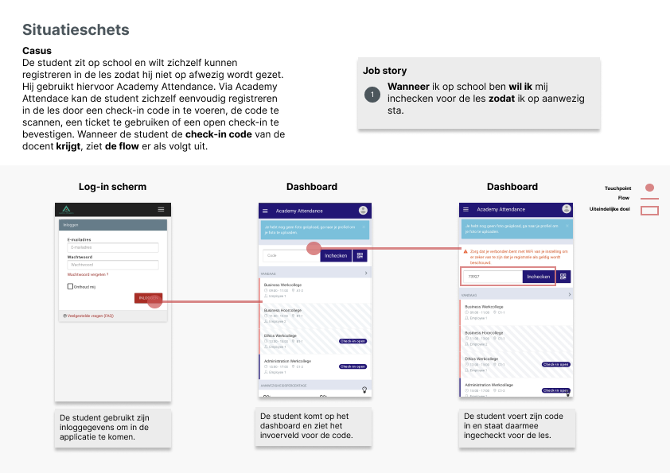
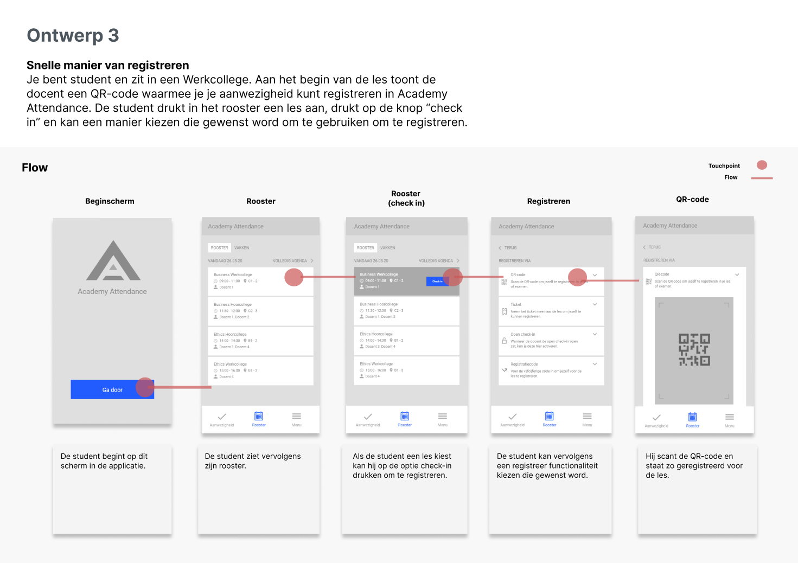
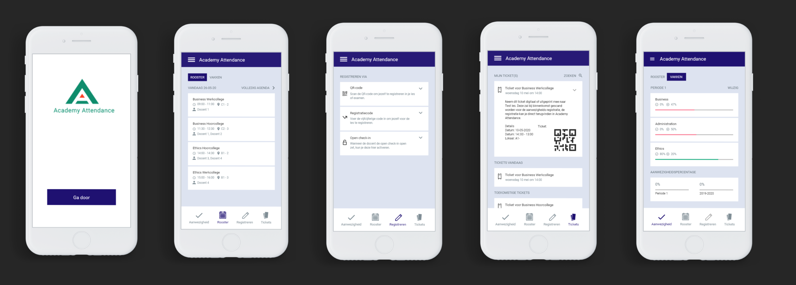

Academy Attendance
Tijdens mijn stage bij Your Next Concepts ben ik aan de slag gegaan met Academy attendance. Academy Attendance is een platform waar studenten en docenten aanwezigheid kunnen registreren. Echter, is de gebruikservaring binnen deze applicatie binnen verschillende devices niet optimaal. De native app en mobiele benadering van de website verschillen nog te veel. Tijdens mijn stage heb ik een onderzoek opgezet om naar een betere uniformiteit te streven.
Inventarisatiefase
In deze fase ben ik de app gaan onderzoeken. Ik ben begonnen met de werking van Academy Attendance. Wat valt me op? en welke functionaliteiten zie ik terug in de applicatie? Deze stappen zijn belangrijk om de werking van de applicatie beter te begrijpen. Ik heb alle functionaliteiten beschreven en uitgewerkt zoals de afbeelding hieronder.
Onderzoeken
Na mijn inventarisatie van de app ben ik ook gaan kijken naar de mobiele benadering van de website. Deze verschilt momenteel te veel van de app waardoor de uniformiteit wegvalt. Toen ik deze dingen onderzocht verplaatste ik mezelf in de student die de app gaat gebruiken. Ik dacht bij mezelf, hoe zou de student dit opzoeken en wat mis ik? Daarom heb ik de app en mobiele benadering nog verder onderzocht. Ik heb dit onderzocht door de job story methode. Door middel van job story’s creëer je namelijk de basis voor een meer klantgericht concept. Via deze manier krijg ik meer inzicht vanuit het gebruikersperspectief. Ik heb gekeken naar in wat voor situatie de gebruiker zich bevindt en wat voor motivatie de gebruiker heeft, zodat ik vervolgens op goede ideeën kan komen voor een beter geheel.
 
Verbeelden en maken
Na het onderzoeken ben ik achter interessante inzichten gekomen waarbij ik denk deze te kunnen verbeteren voor een betere uniformiteit. Zo wil ik in het nieuwe ontwerp samenhorenden functionaliteiten bij elkaar zetten. Op deze manier hebben we minder navigatie-items nodig en hebben we verschillende hoofdfunctionaliteiten bij elkaar. Denk aan het registreren bijvoorbeeld. Waarom deze ontwerprichting? Deze ontwerprichting lijkt mij de juiste omdat ik in de screenflows heb gezien dat eenzelfde functionaliteit op verschillende plekken in de applicatie te vinden is. Ook zouden we de aanwezigheid bij elkaar kunnen zetten en ontwerpen we één agenda. Deze ideeën ben ik gaan uitwerken in verschillende varianten om later te kunnen testen bij de doelgroep.

Testfase en optimaliseren
Na het testen ben ik de ontwerpen gaan verbeteren. Deze ontwerpen ben ik weer gaan testen bij de doelgroep om tot een final design te komen.
